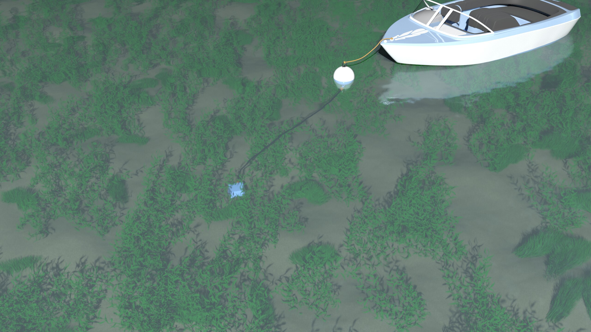

SafeMoor
EOM Offshore - Summer 2019
As my second main project interning at EOM Offshore, I was responsible for the design of the flotation for the ends of a new mooring hose product. The company requested a design for a urethane mold, that could be cast over the hardware at the end of existing hoses. I iterated through various teardrop designs using Autodesk Inventor’s freeform design tools, until arriving at an agreeable form factor. At this point I began the design of the mold itself.
I was recommended by my supervisor to design an aluminium mold that would be CNC machined, however I saw this as an opportunity for using 3D printing to improve the process. I designed two molds, one to be made from aluminium, and the other to be 3D printed. Presenting both, we settled on trying the 3D printed molds, as they were considerably cheaper, and would serve the function of prototyping. As it turned out, we had to make improvements on the flotation design after testing, and the much cheaper 3D printed molds turned what would have been thousands in prototyping expenses to hundreds.


After further refinement of the flotation design, the company needed marketing material for the launch of the SafeMoor hoses. I spent time learning Autodesk 3DS Max, a completely new software to me, in order to produce renders outlining the environmental benefits of the SafeMoor hose over traditional mooring solutions.
For the final product the flotation was removed, however the experimentation with the urethane mold was critical to the product development process, and the use of 3D printing technology siginificantly reduced prototyping cost. As a part of this project, I used and developed my skills in engineering design, Autodesk Inventor, Autodesk 3DS Max, and additive manufacturing.
